# Week 2 Coding Vignette
# We are going to go through a simplified version of the Chapter 2 notebook of Hands on Machine Learning# Normal python style is to load all libraries at the top but we will tend to load them as we go
# This is the main machine learning library with most of the key functions
# We will import a variety of submodules from it a we go
import sklearn
# Pandas and numpy
import pandas as pd
import numpy as np
# These are libraries for working with files, paths, and downloads
from pathlib import Path
import tarfile
import urllib.request
# This function goes to the github for the HOML book and downloads the dataset
def load_housing_data():
tarball_path = Path("datasets/housing.tgz")
# This is just to be friendly to the website, if you already have the file you skip downloading it
if not tarball_path.is_file():
Path("datasets").mkdir(parents=True, exist_ok=True)
url = "https://github.com/ageron/data/raw/main/housing.tgz"
urllib.request.urlretrieve(url, tarball_path)
# These 'with' clauses are helper code that close whatever file or object
# has been opened no matter whether the executed code has an error
with tarfile.open(tarball_path) as housing_tarball:
housing_tarball.extractall(path="datasets")
# We read with pandas and return a dataframe
return pd.read_csv(Path("datasets/housing/housing.csv"))
housing = load_housing_data()# Pandas data frames have a lot of methods that allow you to plot and explore their characteristics
# Top few rows
housing.head()| longitude | latitude | housing_median_age | total_rooms | total_bedrooms | population | households | median_income | median_house_value | ocean_proximity | |
|---|---|---|---|---|---|---|---|---|---|---|
| 0 | -122.23 | 37.88 | 41.0 | 880.0 | 129.0 | 322.0 | 126.0 | 8.3252 | 452600.0 | NEAR BAY |
| 1 | -122.22 | 37.86 | 21.0 | 7099.0 | 1106.0 | 2401.0 | 1138.0 | 8.3014 | 358500.0 | NEAR BAY |
| 2 | -122.24 | 37.85 | 52.0 | 1467.0 | 190.0 | 496.0 | 177.0 | 7.2574 | 352100.0 | NEAR BAY |
| 3 | -122.25 | 37.85 | 52.0 | 1274.0 | 235.0 | 558.0 | 219.0 | 5.6431 | 341300.0 | NEAR BAY |
| 4 | -122.25 | 37.85 | 52.0 | 1627.0 | 280.0 | 565.0 | 259.0 | 3.8462 | 342200.0 | NEAR BAY |
# Information about datatypes and number of non-null variables in the columns
# Notice we do have some missing values, specifically the total number of bedrooms
housing.info()<class 'pandas.DataFrame'>
RangeIndex: 20640 entries, 0 to 20639
Data columns (total 10 columns):
# Column Non-Null Count Dtype
--- ------ -------------- -----
0 longitude 20640 non-null float64
1 latitude 20640 non-null float64
2 housing_median_age 20640 non-null float64
3 total_rooms 20640 non-null float64
4 total_bedrooms 20433 non-null float64
5 population 20640 non-null float64
6 households 20640 non-null float64
7 median_income 20640 non-null float64
8 median_house_value 20640 non-null float64
9 ocean_proximity 20640 non-null str
dtypes: float64(9), str(1)
memory usage: 1.6 MB# Everything is a number but ocean_proximity, we take a look and see it is a categorical variable encoded as a
# string which indicates qualitative distance to ocean. value_counts shows how often each value occurs
housing["ocean_proximity"].value_counts()ocean_proximity
<1H OCEAN 9136
INLAND 6551
NEAR OCEAN 2658
NEAR BAY 2290
ISLAND 5
Name: count, dtype: int64# describe method computes summary statistics, note that it is dropping null values
housing.describe()| longitude | latitude | housing_median_age | total_rooms | total_bedrooms | population | households | median_income | median_house_value | |
|---|---|---|---|---|---|---|---|---|---|
| count | 20640.000000 | 20640.000000 | 20640.000000 | 20640.000000 | 20433.000000 | 20640.000000 | 20640.000000 | 20640.000000 | 20640.000000 |
| mean | -119.569704 | 35.631861 | 28.639486 | 2635.763081 | 537.870553 | 1425.476744 | 499.539680 | 3.870671 | 206855.816909 |
| std | 2.003532 | 2.135952 | 12.585558 | 2181.615252 | 421.385070 | 1132.462122 | 382.329753 | 1.899822 | 115395.615874 |
| min | -124.350000 | 32.540000 | 1.000000 | 2.000000 | 1.000000 | 3.000000 | 1.000000 | 0.499900 | 14999.000000 |
| 25% | -121.800000 | 33.930000 | 18.000000 | 1447.750000 | 296.000000 | 787.000000 | 280.000000 | 2.563400 | 119600.000000 |
| 50% | -118.490000 | 34.260000 | 29.000000 | 2127.000000 | 435.000000 | 1166.000000 | 409.000000 | 3.534800 | 179700.000000 |
| 75% | -118.010000 | 37.710000 | 37.000000 | 3148.000000 | 647.000000 | 1725.000000 | 605.000000 | 4.743250 | 264725.000000 |
| max | -114.310000 | 41.950000 | 52.000000 | 39320.000000 | 6445.000000 | 35682.000000 | 6082.000000 | 15.000100 | 500001.000000 |
# This makes a plot of the distribution of numerical variables
# Observe how plt.tight_layout() fixes some issues with overlapping labels
import matplotlib.pyplot as plt
housing.hist(figsize=(12,8),bins=30)
#plt.tight_layout()
plt.show();
# Things to notice from this figure:
# 1. Lots of variables that are positive only, right skewed. This suggests applying some sort of transformation (like
# a log transform). This is even the case with the target, so we may need to transform back
# 2. Median house value seems to be "clipped", with a big bin right at 500k
# 3. housing median age seems to be multipeaked, building waves? (as are lat and longitude, but that makes sense)
# 4. There are a lot of what I would call "extensive" variables, variables which are are proportional to the population
# of a district. This includes total rooms, bedrooms, and households
# 5. These variables should probably be normalized to either population or to number of households
# 6. Median income has some outliers, and also looks potentially clipped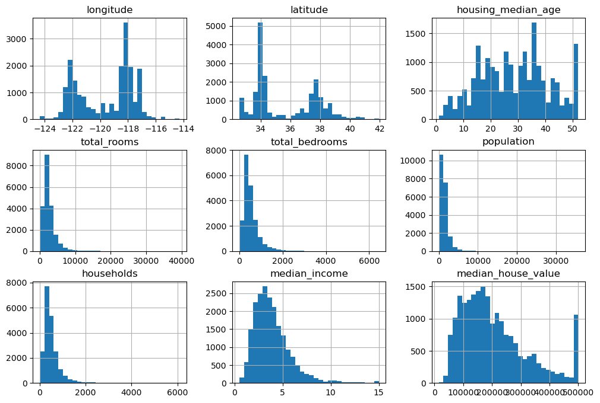
# The next step is to create a test set. This is standard practice, and the test set is used to allow you
# to estimate out of sample performance of a trained model. Sometimes a validation set and a test set are both created,
# if there is going to be lots of hyperparameter tuning. Overfitting can happen in a number of tricky ways, and it can
# be caused simply by the data scientist seeing the test dataset before selecting the algorithms. Thus it is common
# practice across numerous fields to hide the test set before exploratory analysis occurs. A simple example of how
# data can leak between training and testing sets is if you construct features using the full dataset.
# sklearn has a built in function for splitting the data called train_test_split, but here is an example of
# some python code that does the same thing:
# Basically you randomly permute the indices, then pick the first group (up to the index designated by the
# test ratio, to be the test set, and the rest to be the train indices). A tuple containing the training and testing
# sets is returned
# There are some issues around the randomization. You want to use the same random seed every time for this to avoid
# human bias. If your data set is going to change due to data being added, then there are extra considerations and
# methods to ensure that in the process of resplitting/examining your data that you don't end up seeing all of your
# data at some point in the training set. These are the hash based methods discussed in chapter 2, I'll skip
# them in this video because they aren't needed for this problem
def shuffle_and_split_data(data, test_ratio):
shuffled_indices = np.random.permutation(len(data))
test_set_size = int(len(data) * test_ratio)
test_indices = shuffled_indices[:test_set_size]
train_indices = shuffled_indices[test_set_size:]
return data.iloc[train_indices], data.iloc[test_indices]# Here is how we use the sklearn splitter
from sklearn.model_selection import train_test_split
train_set, test_set = train_test_split(housing, test_size=0.2, random_state=402)# Sometimes, it is important to make sure that the train test split isn't biased with respect to some variable of interest
# The idea is to make sure that you have a representative sample both in the training and testing split. This sort of
# procedure is key in several industries, such as polling, where polls are reweighted or corrected to adjust for the
# random (or biased) nature of the sampling.
# The splitter has a "stratify" argument which can be used to make sure you have equal representation across the
# the selected classes.
# Let's say that we want to make sure we have equal representation across different income levels in the test and training
# sets. What we could do is create a new categorical variable using the cut method which bins districts by
# their median income, and then stratify based on that:
housing["income_cat"] = pd.cut(housing["median_income"],
bins=[0., 1.5, 3.0, 4.5, 6., np.inf],
labels=[1, 2, 3, 4, 5])
housing["income_cat"].value_counts().sort_index().plot.bar(rot=0, grid=True)
plt.xlabel("Income category")
plt.ylabel("Number of districts")
plt.tight_layout()
plt.show()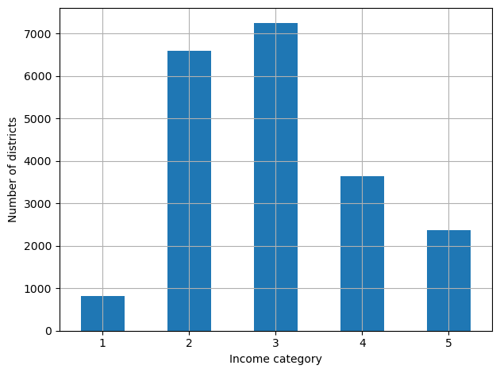
# Now, to perform a stratified train-test split we do this:
strat_train_set, strat_test_set = train_test_split(
housing, test_size=0.2, stratify=housing["income_cat"], random_state=402)
# And since we already have income as a variable we can drop the categories after the split:
for set_ in (strat_train_set, strat_test_set):
set_.drop("income_cat", axis=1, inplace=True)
housing_train = strat_train_set.drop("median_house_value", axis=1)
housing_train_labels = strat_train_set["median_house_value"].copy()# We will make a copy of our dataset to do our EDA/Feature Engineering
housing = strat_train_set.copy()# Here are where the districts are located. Please don't use the 'jet' colormap like HOML does
# Perceptually uniform are superior, i.e. viridis, magma, etc
housing.plot(kind="scatter", x="longitude", y="latitude", grid=True,
s=housing["population"] / 100, label="population",
c="median_house_value", cmap="viridis", colorbar=True,
legend=True, sharex=False, figsize=(10, 7))
plt.show()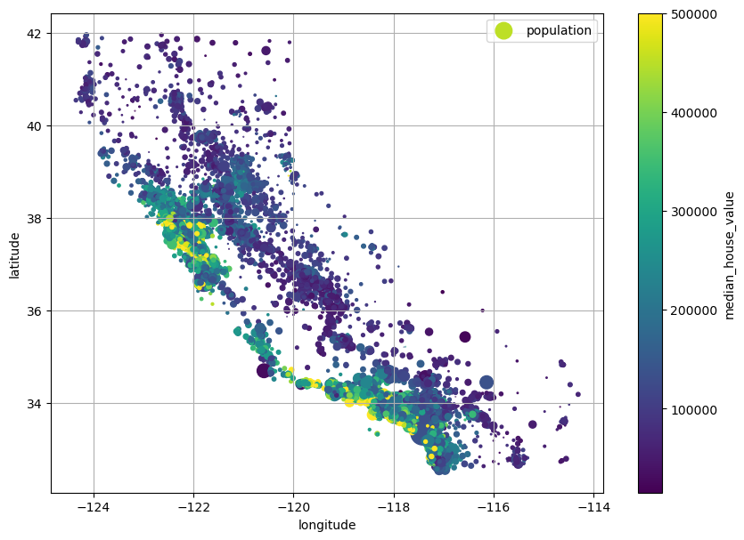
# This generates a matrix of correlation coefficients
corr_matrix = housing.corr(numeric_only=True)# This is our target value, let's see what correlates with it:
corr_matrix["median_house_value"].sort_values(ascending=False)median_house_value 1.000000
median_income 0.688075
total_rooms 0.134153
housing_median_age 0.105623
households 0.065843
total_bedrooms 0.049686
population -0.024650
longitude -0.045967
latitude -0.144160
Name: median_house_value, dtype: float64# I think the extensive values provide little information, even if they seem important, i.e. total_rooms,
# households, total_bedrooms, population. They are all very strongly correlated with each other
corr_matrix["population"].sort_values(ascending=False)population 1.000000
households 0.907222
total_bedrooms 0.877747
total_rooms 0.857126
longitude 0.099773
median_income 0.004834
median_house_value -0.024650
latitude -0.108785
housing_median_age -0.296244
Name: population, dtype: float64# Here we have normalized the extensive variables to either population, households, or total rooms
housing["rooms_per_house"] = housing["total_rooms"] / housing["households"]
housing["bedrooms_ratio"] = housing["total_bedrooms"] / housing["total_rooms"]
housing["people_per_house"] = housing["population"] / housing["households"]corr_matrix = housing.corr(numeric_only=True)
corr_matrix["median_house_value"].sort_values(ascending=False)median_house_value 1.000000
median_income 0.688075
rooms_per_house 0.151948
total_rooms 0.134153
housing_median_age 0.105623
households 0.065843
total_bedrooms 0.049686
people_per_house -0.023737
population -0.024650
longitude -0.045967
latitude -0.144160
bedrooms_ratio -0.255880
Name: median_house_value, dtype: float64# I would drop the extensive values, though HOML doesn't. We will keep just the population. It would be
# reasonable to correct the error if we were doing a linear regression to weight according to population to
# correct for heteroscedasticity
housing.drop(['total_rooms','total_bedrooms','households'],axis=1, inplace=True)--------------------------------------------------------------------------- KeyError Traceback (most recent call last) Cell In[26], line 6 1 # I would drop the extensive values, though HOML doesn't. We will keep just the population. It would be 2 # reasonable to correct the error if we were doing a linear regression to weight according to population to 3 # correct for heteroscedasticity ----> 6 housing.drop(['total_rooms','total_bedrooms','households'],axis=1, inplace=True) File ~/miniforge3/envs/DATA622/lib/python3.11/site-packages/pandas/core/frame.py:6288, in DataFrame.drop(self, labels, axis, index, columns, level, inplace, errors) 6130 def drop( 6131 self, 6132 labels: IndexLabel | ListLike = None, (...) 6139 errors: IgnoreRaise = "raise", 6140 ) -> DataFrame | None: 6141 """ 6142 Drop specified labels from rows or columns. 6143 (...) 6286 weight 1.0 0.8 6287 """ -> 6288 return super().drop( 6289 labels=labels, 6290 axis=axis, 6291 index=index, 6292 columns=columns, 6293 level=level, 6294 inplace=inplace, 6295 errors=errors, 6296 ) File ~/miniforge3/envs/DATA622/lib/python3.11/site-packages/pandas/core/generic.py:4644, in NDFrame.drop(self, labels, axis, index, columns, level, inplace, errors) 4642 for axis, labels in axes.items(): 4643 if labels is not None: -> 4644 obj = obj._drop_axis(labels, axis, level=level, errors=errors) 4646 if inplace: 4647 self._update_inplace(obj) File ~/miniforge3/envs/DATA622/lib/python3.11/site-packages/pandas/core/generic.py:4686, in NDFrame._drop_axis(self, labels, axis, level, errors, only_slice) 4684 new_axis = axis.drop(labels, level=level, errors=errors) 4685 else: -> 4686 new_axis = axis.drop(labels, errors=errors) 4687 indexer = axis.get_indexer(new_axis) 4689 # Case for non-unique axis 4690 else: File ~/miniforge3/envs/DATA622/lib/python3.11/site-packages/pandas/core/indexes/base.py:7268, in Index.drop(self, labels, errors) 7266 if mask.any(): 7267 if errors != "ignore": -> 7268 raise KeyError(f"{labels[mask].tolist()} not found in axis") 7269 indexer = indexer[~mask] 7270 return self.delete(indexer) KeyError: "['total_rooms', 'total_bedrooms', 'households'] not found in axis"
from pandas.plotting import scatter_matrix
attributes = ["median_house_value", "median_income", "rooms_per_house","population",
"housing_median_age"]
scatter_matrix(housing[attributes], figsize=(12, 8))
plt.tight_layout()
plt.show()
# I think the most mysterious thing you should see are the districts where the rooms_per_house is excessive, like greater than 30.
# Other interesting features are the bars at high median income and the heteroscedasticity.
# The high rooms per house are in certain areas (around lake Tahoe, I think they are ski resorts)
# You would need to sort this stuff out if working on this professionally
housing.query("rooms_per_house >30").plot(kind="scatter",x="longitude",y="latitude",s=20)
plt.scatter(x=housing["longitude"],y=housing["latitude"],color="red",alpha=0.01)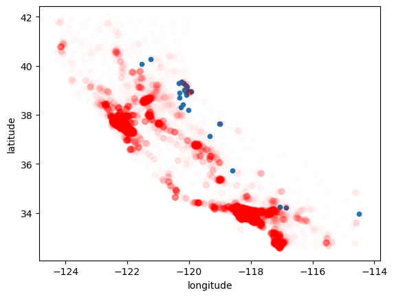
# Handling null values
# There are a few ways to do this, either you discard the rows with null values, discard the column with null values (i.e. just abandon that variable)
# or do imputation. There is not a rule about what you should do, you have to use your best judgement. It is critical to consider why the values
# might be missing, and what impact each choice could have on the analysis. For example, if values are missing for records which are critically
# important to the performance of the algorithm, dropping those observations may not be an option because of how it will bias your modeling.
# In this case, imputation (using some sort of modeling) or discarding the entire variable are the best choices.
# Something about imputation has always bothered me. I think that if you impute you should add a variable to the dataset indicating if the observation
# was imputed and see how it impacts the model
# For this analysis we are going to impute the median, there are only 7 missing values we could easily discard them but we will stick with the text
housing.info()
<class 'pandas.DataFrame'>
RangeIndex: 20640 entries, 0 to 20639
Data columns (total 11 columns):
# Column Non-Null Count Dtype
--- ------ -------------- -----
0 longitude 20640 non-null float64
1 latitude 20640 non-null float64
2 housing_median_age 20640 non-null float64
3 population 20640 non-null float64
4 median_income 20640 non-null float64
5 median_house_value 20640 non-null float64
6 ocean_proximity 20640 non-null str
7 income_cat 20640 non-null category
8 rooms_per_house 20640 non-null float64
9 bedrooms_ratio 20433 non-null float64
10 people_per_house 20640 non-null float64
dtypes: category(1), float64(9), str(1)
memory usage: 1.6 MB# We will use an imputer to do this since it shows off the most unfamiliar feature. An imputer is one of the fundamental types of
# transfomer objects in scikit learn (others are things like the scalers)
from sklearn.impute import SimpleImputer
imputer = SimpleImputer(strategy="median")
housing_num = housing.select_dtypes(include=[np.number])
imputer.fit(housing_num)
X = imputer.transform(housing_num) # This creates a numpy array with the transformed (imputed values replaced)
housing_tr = pd.DataFrame(X, columns=housing_num.columns,
index=housing_num.index)# Our algorithm will need to deal with categorical variables. Some methods handle it naturally, such
# as regular linear regression. But many do not. For the one categorical variable, we could attempt to give it an ordinal structure, it is still somewhat
# vague to decide what the levels should be.
# But the other way is something called one-hot encoding. It creates a new column for each categorical value
housing_cat = housing[["ocean_proximity"]]
housing_cat.value_counts()
from sklearn.preprocessing import OneHotEncoder
cat_encoder = OneHotEncoder()
housing_cat_1hot = cat_encoder.fit_transform(housing_cat)
housing_cat_1hot
<Compressed Sparse Row sparse matrix of dtype 'float64'
with 20640 stored elements and shape (20640, 5)># We are going to want to do a few different transformations to the numerical features:
# 1. We will apply the log transformation to a few variables that are positive and have a right skew
# This includes
# 2. We will use the standard scaler to transform variables to having mean 0 and variance 1
fig, axs = plt.subplots(1, 2, figsize=(8, 3), sharey=True)
housing["population"].hist(ax=axs[0], bins=50)
housing["population"].apply(np.log).hist(ax=axs[1], bins=50)
axs[0].set_xlabel("Population")
axs[1].set_xlabel("Log of population")
axs[0].set_ylabel("Number of districts")
plt.show()
from sklearn.compose import TransformedTargetRegressor
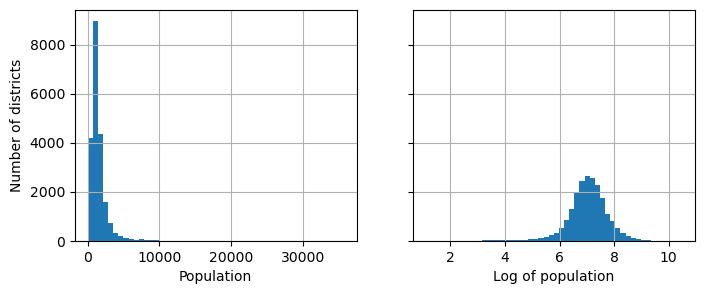
fig, axs = plt.subplots(1, 2, figsize=(8, 3), sharey=True)
housing["median_income"].hist(ax=axs[0], bins=50)
housing["median_income"].apply(np.log).hist(ax=axs[1], bins=50)
axs[0].set_xlabel("Median Income")
axs[1].set_xlabel("Log of Median Income")
axs[0].set_ylabel("Number of districts")
plt.show()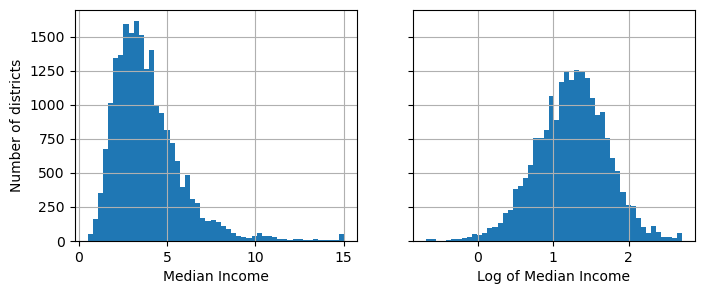
fig, axs = plt.subplots(1, 2, figsize=(8, 3), sharey=True)
housing["median_house_value"].hist(ax=axs[0], bins=50)
housing["median_house_value"].apply(np.log).hist(ax=axs[1], bins=50)
axs[0].set_xlabel("Median Housing Price")
axs[1].set_xlabel("Log of Median Housing Price")
axs[0].set_ylabel("Number of districts")
plt.tight_layout()
plt.show()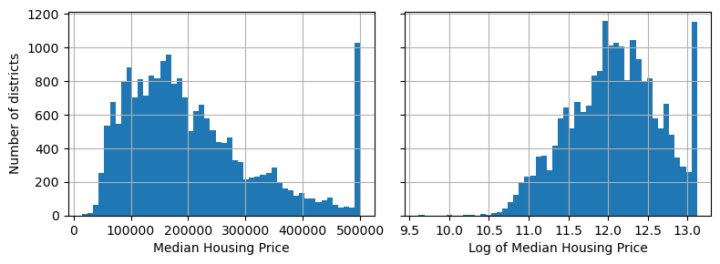
from sklearn.preprocessing import StandardScaler| longitude | latitude | housing_median_age | population | median_income | median_house_value | ocean_proximity | income_cat | rooms_per_house | bedrooms_ratio | people_per_house | |
|---|---|---|---|---|---|---|---|---|---|---|---|
| 0 | -122.23 | 37.88 | 41.0 | 322.0 | 8.3252 | 452600.0 | NEAR BAY | 5 | 6.984127 | 0.146591 | 2.555556 |
| 1 | -122.22 | 37.86 | 21.0 | 2401.0 | 8.3014 | 358500.0 | NEAR BAY | 5 | 6.238137 | 0.155797 | 2.109842 |
| 2 | -122.24 | 37.85 | 52.0 | 496.0 | 7.2574 | 352100.0 | NEAR BAY | 5 | 8.288136 | 0.129516 | 2.802260 |
| 3 | -122.25 | 37.85 | 52.0 | 558.0 | 5.6431 | 341300.0 | NEAR BAY | 4 | 5.817352 | 0.184458 | 2.547945 |
| 4 | -122.25 | 37.85 | 52.0 | 565.0 | 3.8462 | 342200.0 | NEAR BAY | 3 | 6.281853 | 0.172096 | 2.181467 |
| ... | ... | ... | ... | ... | ... | ... | ... | ... | ... | ... | ... |
| 20635 | -121.09 | 39.48 | 25.0 | 845.0 | 1.5603 | 78100.0 | INLAND | 2 | 5.045455 | 0.224625 | 2.560606 |
| 20636 | -121.21 | 39.49 | 18.0 | 356.0 | 2.5568 | 77100.0 | INLAND | 2 | 6.114035 | 0.215208 | 3.122807 |
| 20637 | -121.22 | 39.43 | 17.0 | 1007.0 | 1.7000 | 92300.0 | INLAND | 2 | 5.205543 | 0.215173 | 2.325635 |
| 20638 | -121.32 | 39.43 | 18.0 | 741.0 | 1.8672 | 84700.0 | INLAND | 2 | 5.329513 | 0.219892 | 2.123209 |
| 20639 | -121.24 | 39.37 | 16.0 | 1387.0 | 2.3886 | 89400.0 | INLAND | 2 | 5.254717 | 0.221185 | 2.616981 |
20640 rows × 11 columns
# Now it is time to put it all together into one pipeline that does all of the preprocessing steps
# A pipeline is a sequence of data processing components. Most machine learning systems are structured using pipelines, and
# idiomatic sklearn makes extensive use of pipelines. Here we are going to build such a pipeline. It is going to do the following things from the
# original dataset
# 1. Create the new features, which are the "intensive variables", i.e. the rooms/household, bedrooms/rooms, people/household
# 2. Discard some of the extensive variables, i.e. total households, total rooms, total bedrooms
# 3. Impute missing values in the numerical variables using the median values
# 4. Log transform the the right skewed, positive variables, i.e. median income, population, and the target which is price
# 5. Apply the standard scaler to the numerical variables
# 6. Perform One-Hot encoding on the categorical variable ocean-proximity
from sklearn.pipeline import Pipeline, make_pipeline
from sklearn.compose import ColumnTransformer, make_column_selector
from sklearn.preprocessing import FunctionTransformer
# Basically this takes anumpy array or data frame and divides the first column by the second
def column_ratio(X):
return X[:, [0]] / X[:, [1]]
# This is just a helper function to add the names of the ratios
def ratio_name(function_transformer, feature_names_in):
return ["ratio"]
# We put together all the steps in making the ratio variables, impute, call the column ratio
# function using FunctionTransformer. The function transformer will have all the needed methods of a sklearn pipeline
# make_pipeline is a simple way to string together the components/transformations/models of a given pipeline. It automatically names
# the given elements of a pipeline.
def ratio_pipeline():
return make_pipeline(
SimpleImputer(strategy="median"),
FunctionTransformer(column_ratio, feature_names_out=ratio_name),
StandardScaler())
# This pipeline applies the log transform and the standard scaler. the log1p evaluates log1p(0)=0 rather than NaN. Just be aware of that
log_pipeline = make_pipeline(
FunctionTransformer(np.log1p, feature_names_out="one-to-one"),
StandardScaler())
# The ColumnTransformer function is key to coding this process in a compact and easy way.
# This unction applies different transformations to subsets of columns and then puts the result together (either of a pandas data frame or
# numpy array)
# For example, the first three entries in this function create the ratios. Each one returns a single column
# Then the next one applies the log transform to population and median income
# Then the cat
preprocessing = ColumnTransformer([
("bedrooms_ratio", ratio_pipeline(), ["total_bedrooms", "total_rooms"]),
("rooms_per_house", ratio_pipeline(), ["total_rooms", "households"]),
("people_per_house", ratio_pipeline(), ["population", "households"]),
("log", log_pipeline, ["population", "median_income"]),
("cat",OneHotEncoder(),[ make_column_selector(dtype_include=object)]),
],
remainder=StandardScaler())
# This transforms our training data
# Notice the use of fit_transform. This "learns" the properties of our training data then applies the transformation
housing_train_prep = preprocessing.fit_transform(housing_train)
# This here uses only transform. This applies the transformation, this ensures no data leakagae from the training to the test set
housing_test = strat_test_set.drop("median_house_value", axis=1)
housing_test_labels = strat_test_set["median_house_value"].copy()
housing_test_prep = preprocessing.transform(housing_test)
housing_train_prep_df = pd.DataFrame(
housing_train_prep,
columns=preprocessing.get_feature_names_out(),
index=housing_train.index
)
attributes = ["log__median_income", "log__population", "rooms_per_house__ratio","people_per_house__ratio",
"remainder__housing_median_age"]
scatter_matrix(housing_train_prep_df[attributes], figsize=(12, 8))
plt.tight_layout()
plt.show()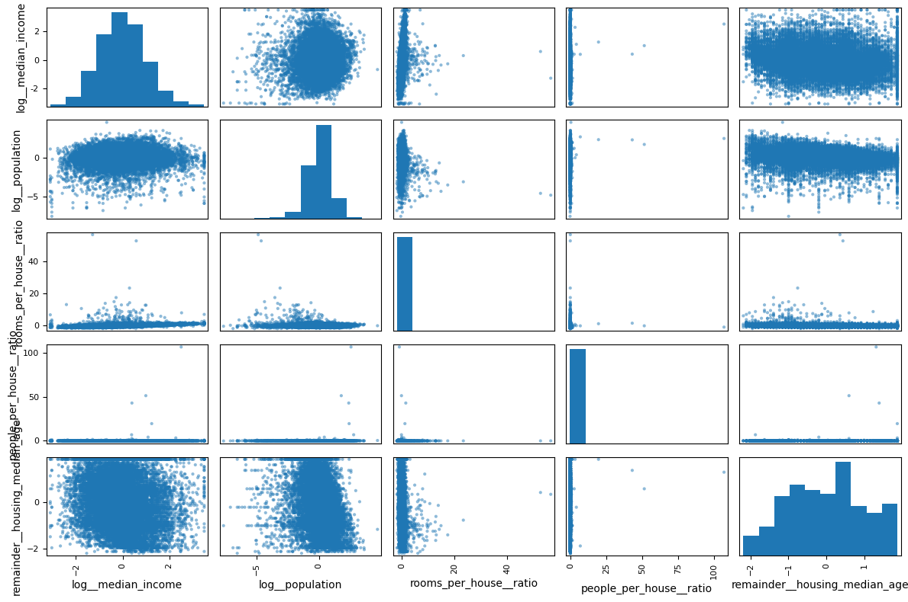
housing_train_prep_df| bedrooms_ratio__ratio | rooms_per_house__ratio | people_per_house__ratio | log__population | log__median_income | cat__ocean_proximity_<1H OCEAN | cat__ocean_proximity_INLAND | cat__ocean_proximity_ISLAND | cat__ocean_proximity_NEAR BAY | cat__ocean_proximity_NEAR OCEAN | remainder__longitude | remainder__latitude | remainder__housing_median_age | |
|---|---|---|---|---|---|---|---|---|---|---|---|---|---|
| 13419 | -0.979161 | 0.550118 | -0.021433 | -0.096174 | 1.040905 | 0.0 | 0.0 | 0.0 | 1.0 | 0.0 | -1.256115 | 0.985047 | 0.272016 |
| 8767 | -1.055108 | 0.011311 | -0.052450 | -0.248551 | 1.196962 | 0.0 | 1.0 | 0.0 | 0.0 | 0.0 | 1.156358 | -0.691474 | -0.203706 |
| 10319 | 0.300907 | -0.519148 | 0.586262 | 1.317844 | -0.260532 | 1.0 | 0.0 | 0.0 | 0.0 | 0.0 | 0.692805 | -0.738435 | 0.509876 |
| 1586 | 0.203022 | -0.384553 | 0.052234 | 0.643714 | 0.264685 | 0.0 | 0.0 | 0.0 | 0.0 | 1.0 | -1.440539 | 0.975655 | 1.382032 |
| 7983 | 0.243192 | -0.381254 | -0.069230 | -0.244237 | -1.841475 | 0.0 | 1.0 | 0.0 | 0.0 | 0.0 | -1.350819 | 2.238916 | -0.203706 |
| ... | ... | ... | ... | ... | ... | ... | ... | ... | ... | ... | ... | ... | ... |
| 13216 | 1.124927 | -0.644651 | -0.117597 | -0.114307 | -0.357931 | 0.0 | 0.0 | 0.0 | 0.0 | 1.0 | 1.161343 | -1.292579 | -1.075861 |
| 2333 | -0.142219 | -0.279526 | -0.006012 | -0.327130 | -0.139061 | 1.0 | 0.0 | 0.0 | 0.0 | 0.0 | 0.707758 | -0.808877 | 0.827024 |
| 17461 | 0.644906 | -0.616431 | 0.000065 | -0.035793 | 0.511052 | 0.0 | 0.0 | 0.0 | 0.0 | 1.0 | -1.420602 | 0.956870 | 0.272016 |
| 3089 | 0.399070 | -0.358404 | -0.089588 | 0.252247 | -0.025621 | 1.0 | 0.0 | 0.0 | 0.0 | 0.0 | 0.662898 | -0.663297 | 0.589163 |
| 15275 | 0.009821 | -0.253342 | 0.094344 | 0.713271 | -1.064480 | 0.0 | 1.0 | 0.0 | 0.0 | 0.0 | 0.368815 | -0.198379 | 0.430589 |
16512 rows × 13 columns
attributes = ["median_house_value", "median_income", "rooms_per_house","population",
"housing_median_age"]
scatter_matrix(housing[attributes], figsize=(12, 8))
plt.tight_layout()
plt.show()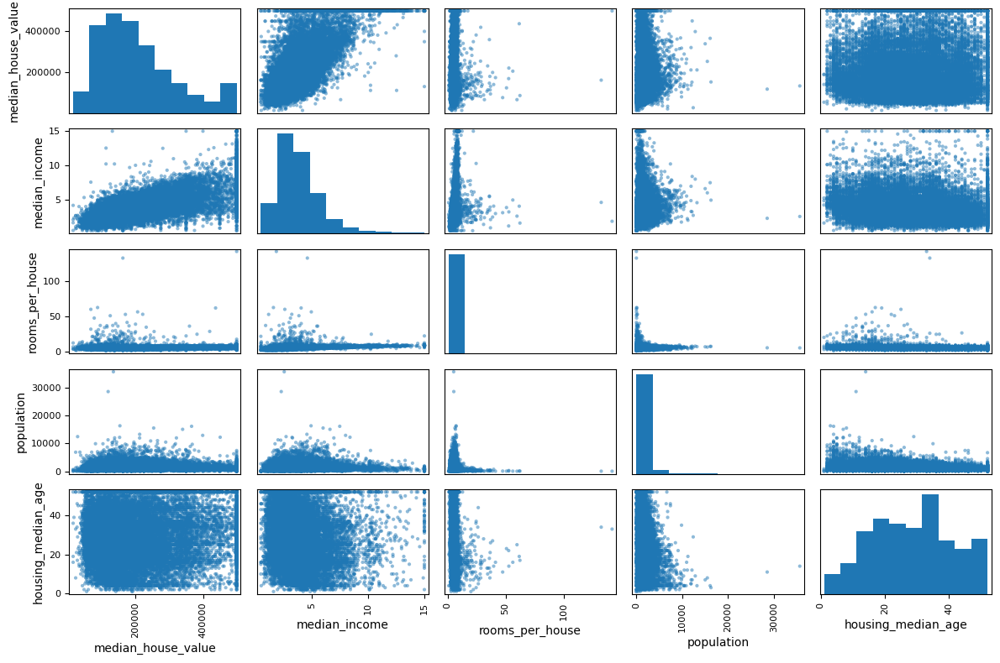
# Time to model.
# We are going to build a baseline linear regression model that uses all of the features and test the performance. We will use the log
# transformation on the target and show you how to do that, and then show how to incorporate everything into a nice pipeline
from sklearn.compose import TransformedTargetRegressor
from sklearn.linear_model import LinearRegression
from sklearn.metrics import mean_squared_error, mean_absolute_error
# This fits a linear model to our transformed data
linear_model = LinearRegression()
linear_model.fit(housing_train_prep, housing_train_labels)
predictions = linear_model.predict(housing_test_prep)
rmse = np.sqrt(mean_squared_error(housing_test_labels, predictions))
mae = mean_absolute_error(housing_test_labels,predictions)
print(f"RMSE: {rmse:,.2f}")
print(f"MAE: {mae:,.2f}")
# To fit a model to the log we use TransformedTargetRegressor like this:
# This applies the log transformation to the target. Notice we need to supply an inverse transformation
log_linear_model = TransformedTargetRegressor(
regressor=LinearRegression(),
func=np.log,
inverse_func=np.exp
)
log_linear_model.fit(housing_train_prep, housing_train_labels)
ll_predictions = log_linear_model.predict(housing_test_prep)
# Evaluate
rmse = np.sqrt(mean_squared_error(housing_test_labels, ll_predictions))
mae = mean_absolute_error(housing_test_labels,ll_predictions)
print(f"RMSE: {rmse:,.2f}")
print(f"MAE: {mae:,.2f}")
# Note the big drop in MAE for the log-linear model. This is because when you fit the log transformed target, you are handling the heteroscedasticity
# and as a result the fit prioritizes errors at "lower" values of the price variable. Wnen you compare on the original target, the errors
# you make at higher price get exponentiated and so contribute more.RMSE: 73,383.61
MAE: 55,332.41
RMSE: 72,377.98
MAE: 49,987.39
train_predictions = linear_model.predict(housing_train_prep)
test_predictions = linear_model.predict(housing_test_prep)
test_rmse = np.sqrt(mean_squared_error(housing_test_labels,test_predictions))
train_rmse = np.sqrt(mean_squared_error(housing_train_labels,train_predictions))
test_rmse
train_rmsenp.float64(73339.49971557138)# How would we explore the pattern of residuals and the importance of each transformed feature?
# Start with importance
feature_names = preprocessing.get_feature_names_out()
coefficients = log_linear_model.regressor_.coef_ # Have to get the regressor out of the transformer object
coef_df = pd.DataFrame({
'feature': feature_names,
'coefficient': coefficients,
})
# We sort by magnitude
coef_df.sort_values('coefficient', ascending=False).head(20)
# We can see that in this model, rich places have expensive homes, islands are expensive, inland is cheap
# the more bedrooms per room and rooms per house are expensive, and the more people per house is cheaper| feature | coefficient | |
|---|---|---|
| 4 | log__median_income | 0.357058 |
| 7 | cat__ocean_proximity_ISLAND | 0.308773 |
| 0 | bedrooms_ratio__ratio | 0.070738 |
| 1 | rooms_per_house__ratio | 0.033224 |
| 12 | remainder__housing_median_age | 0.028634 |
| 3 | log__population | 0.001201 |
| 8 | cat__ocean_proximity_NEAR BAY | -0.001811 |
| 5 | cat__ocean_proximity_<1H OCEAN | -0.002904 |
| 9 | cat__ocean_proximity_NEAR OCEAN | -0.008183 |
| 2 | people_per_house__ratio | -0.014618 |
| 6 | cat__ocean_proximity_INLAND | -0.295874 |
| 10 | remainder__longitude | -0.299709 |
| 11 | remainder__latitude | -0.304128 |
# Here we are going to take a look at what the model is actually doing. This is
# often a really important step for gaining an understanding
# We just subtract the true price from the predictions. I feel like I should keep this in log
# space
###
residuals = np.log(housing_test_labels) - np.log(ll_predictions)
# Create a figure with multiple subplots
fig, axes = plt.subplots(2, 2, figsize=(12, 10))
# Plot 1: Residuals vs Predicted Values
axes[0, 0].scatter(np.log(ll_predictions), residuals, alpha=0.5)
axes[0, 0].axhline(y=0, color='k', linestyle='--')
axes[0, 0].set_xlabel('Predicted Values')
axes[0, 0].set_ylabel('Residuals')
axes[0, 0].set_title('Residuals vs Predicted Values')
# Plot 2: Residuals vs Actual Values
axes[0, 1].scatter(np.log(housing_test_labels), residuals, alpha=0.5)
axes[0, 1].axhline(y=0, color='k', linestyle='--')
axes[0, 1].set_xlabel('Actual Values')
axes[0, 1].set_ylabel('Residuals')
axes[0, 1].set_title('Residuals vs Actual Values')
# Plot 3: Histogram of Residuals
axes[1, 0].hist((residuals), bins=50, edgecolor='black')
axes[1, 0].set_xlabel('Residuals')
axes[1, 0].set_ylabel('Frequency')
axes[1, 0].set_title('Distribution of Residuals')
# Plot 4: Predicted vs Actual
axes[1, 1].scatter(np.log(housing_test_labels), np.log(predictions), alpha=0.5)
axes[1, 1].plot([np.log(housing_test_labels.min()), np.log(housing_test_labels.max())],
[np.log(housing_test_labels.min()), np.log(housing_test_labels.max())],
'k--', lw=2)
axes[1, 1].set_xlabel('Actual Values')
axes[1, 1].set_ylabel('Predicted Values')
axes[1, 1].set_title('Predicted vs Actual')
axes[1, 1].legend()
plt.tight_layout()
plt.show()<positron-console-cell-148>:38: RuntimeWarning: invalid value encountered in log
<positron-console-cell-148>:45: UserWarning: No artists with labels found to put in legend. Note that artists whose label start with an underscore are ignored when legend() is called with no argument.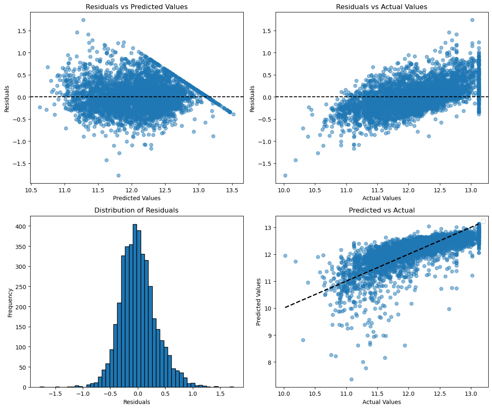
fig, ax = plt.subplots(figsize=(8, 6))
scatter = ax.scatter(
housing_test['longitude'],
housing_test['latitude'],
c=residuals,
cmap='RdBu',
alpha=0.6,
s=30,
vmin=-1,
vmax=1
)
ax.set_xlabel('Longitude')
ax.set_ylabel('Latitude')
ax.set_title('Geographic Pattern of Residuals',fontsize=24)
plt.colorbar(scatter,extend="both", label='Residuals')
plt.tight_layout()
plt.show()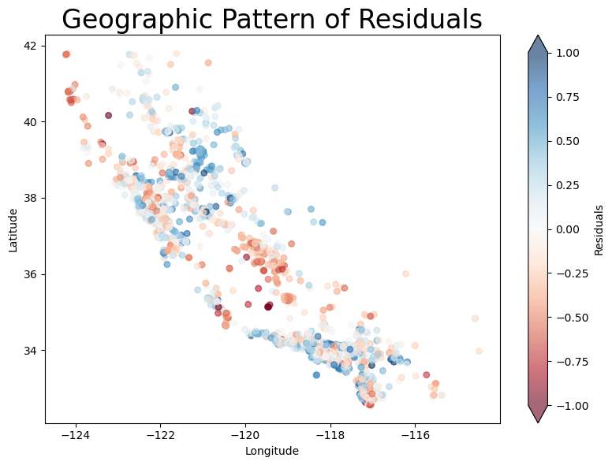
# Let's try a knn model
from sklearn.neighbors import KNeighborsRegressor
knn_model = KNeighborsRegressor(n_neighbors=10)
knn_model.fit(housing_train_prep, housing_train_labels)
predictions = knn_model.predict(housing_test_prep)
rmse = np.sqrt(mean_squared_error(housing_test_labels, predictions))
mae = mean_absolute_error(housing_test_labels,predictions)
print(f"RMSE: {rmse:,.2f}")
print(f"MAE: {mae:,.2f}")RMSE: 62,783.17
MAE: 43,011.86residuals = np.log(housing_test_labels) - np.log(predictions)
fig, ax = plt.subplots(figsize=(8, 6))
scatter = ax.scatter(
housing_test['longitude'],
housing_test['latitude'],
c=residuals,
cmap='RdBu',
alpha=0.6,
s=30,
vmin=-1,
vmax=1
)
ax.set_xlabel('Longitude')
ax.set_ylabel('Latitude')
ax.set_title('Geographic Pattern of Residuals',fontsize=24)
plt.colorbar(scatter,extend="both", label='Residuals')
plt.tight_layout()
plt.show()<positron-console-cell-150>:1: RuntimeWarning: invalid value encountered in log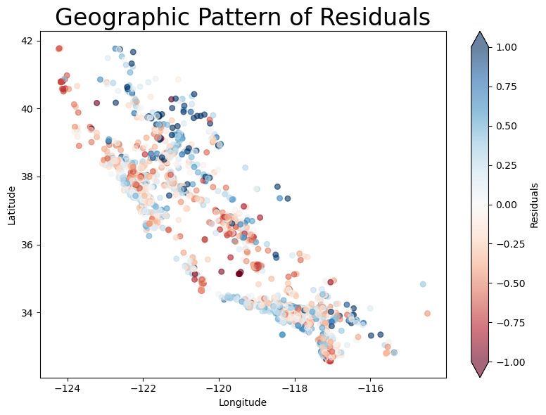
# How to make a full pipeline
linear_regression_pipeline = Pipeline([
('preprocessing', preprocessing),
('model', TransformedTargetRegressor(
regressor=LinearRegression(),
func=np.log,
inverse_func=np.exp
))
])
knn_regression_pipeline = Pipeline([
('preprocessing', preprocessing),
('model', KNeighborsRegressor(n_neighbors=5))
])
knn_regression_pipeline.fit(housing_train, housing_train_labels)
predictions_knn = knn_regression_pipeline.predict(housing_test)
rmse = np.sqrt(mean_squared_error(housing_test_labels, predictions_knn))
print(f"KNN RMSE: {rmse:,.2f}")KNN RMSE: 64,480.66